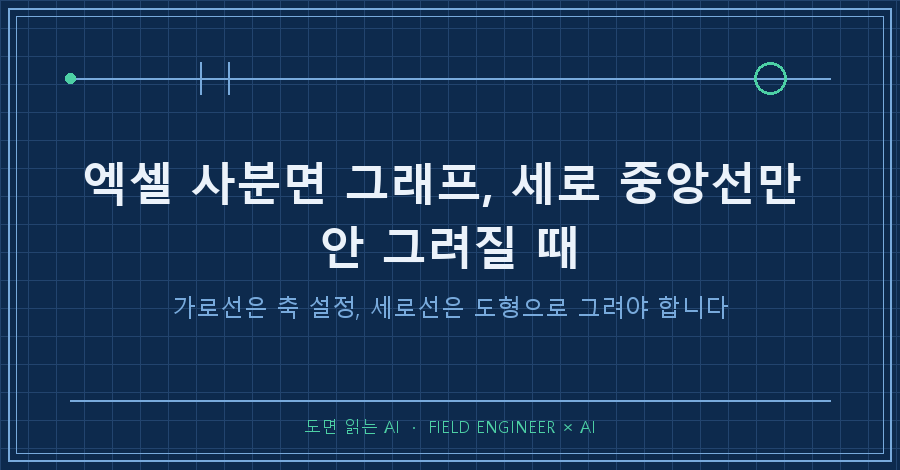
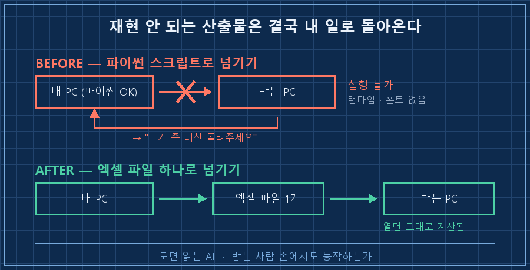
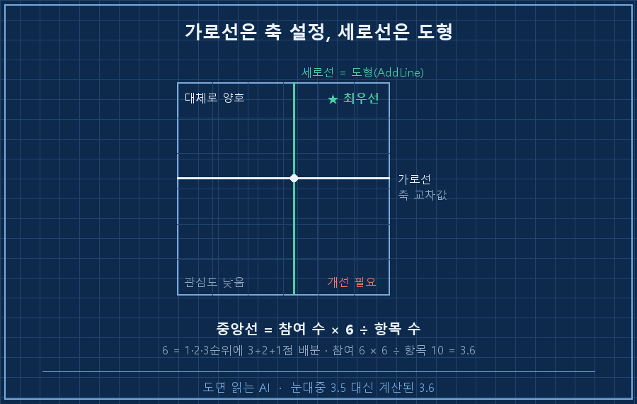
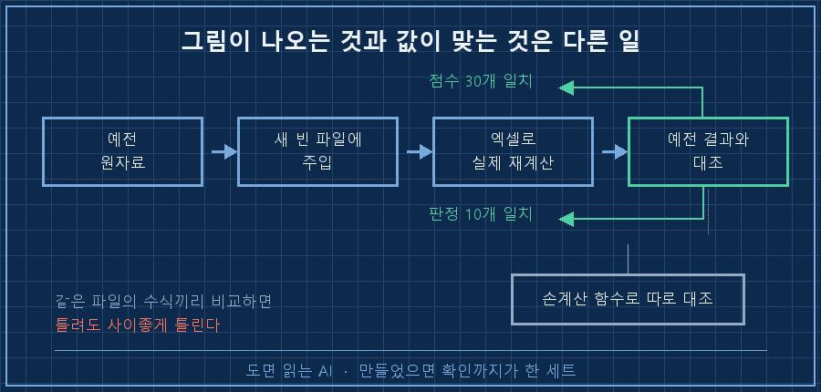

두 줄을 나란히 써넣었습니다. 가로 중앙선, 세로 중앙선. 코드도 대칭이었고 값도 같았어요.
chart.x_axis.crosses = None; chart.x_axis.crossesAt = MID # 세로선 → 안 나옴
chart.y_axis.crosses = None; chart.y_axis.crossesAt = MID # 가로선 → 나옴열어보니 가로선 하나만 그어져 있고 세로선 자리는 텅 비어 있더라고요.
엑셀 사분면 그래프에서 세로 중앙선이 안 그려지는 건 코드가 틀려서가 아닙니다. 버블차트가 가로축 교차값을 무시하기 때문이에요. 가로선은 세로축의 교차 설정으로 만들어지지만, 세로선은 축 설정으로는 절대 안 나옵니다. 도형(직선)을 좌표로 계산해서 직접 얹어야 해요.
2026년 9월 기준이고, 윈도우 + 엑셀이 깔린 PC에서 파이썬 openpyxl로 파일을 만든 다음 엑셀 API로 마무리하는 방식입니다. 항목마다 점수 두 개를 매겨서 사분면에 뿌리는 형태라면 데이터가 뭐든 똑같이 걸립니다.
1. 애초에 왜 파이썬을 버렸냐면요
처음엔 다 파이썬으로 돌렸습니다. 점수 집계하고, 사분면 그림 뽑고, 잘 나왔어요.
문제는 이게 제가 쓸 물건이 아니라 남한테 넘길 물건이었다는 겁니다. 받는 쪽 PC에는 파이썬도 없고, 그래프 라이브러리도 없고, 한글 폰트 설정도 안 돼 있어요. 스크립트를 보내봐야 실행이 안 되고, 실행이 안 되면 결국 "그거 좀 대신 돌려주세요"가 돌아옵니다. 그럼 자동화가 아니라 제 일이 하나 더 생긴 거죠..
저는 제어·계측 쪽 일을 십오 년쯤 했습니다. 이 바닥에서 물건을 넘길 때는 동작하느냐보다 받는 사람 손에서도 동작하느냐를 먼저 봐요. 현장에 못 가져가는 장비는 아무리 좋아도 못 쓰는 물건이거든요. 정작 제가 만든 자동화에는 그 기준을 안 대고 있었습니다.
그래서 통째로 엑셀 파일 하나로 옮겼어요. 수식은 시트 안에, 그래프는 차트 개체로. 여러분도 AI한테 뭘 만들게 시킬 때 "결과물"만 받고 계시지는 않나요? 저는 이번에 받는 쪽 환경을 먼저 적어주고 시작했습니다.
| | 파이썬 스크립트로 넘기기 | 엑셀 파일 하나로 넘기기 |
|---|---|---|
| 받는 쪽 준비물 | 파이썬·라이브러리·폰트 | 엑셀만 |
| 값 바꾸기 | 코드 수정 | 칸에 입력 |
| 그림 다시 뽑기 | 재실행 | 자동 갱신 |
| 안 될 때 | 나한테 연락 | 그 자리에서 해결 |

2. 옮기고 나니 세로선만 안 그려졌어요
엑셀 사분면 그래프는 선 두 개가 생명입니다. 가로 중앙선과 세로 중앙선이 있어야 네 구역이 갈리니까요.
앞에 적은 것처럼 두 축에 똑같이 교차값을 넣었는데 세로선만 계속 안 나왔습니다. 처음엔 값이 축 범위 밖으로 나갔나 싶어 범위를 손봤고, 그다음엔 저장 과정에서 날아가나 싶어 파일을 다시 만들어봤어요. 둘 다 아니었습니다..
버블차트에서는 가로축의 교차 설정 자체가 먹히지 않습니다. 제 환경에서 실측한 결론이고, 그래서 방법을 바꿨어요. 선을 축한테 그리게 하지 말고 제가 좌표를 계산해서 도형으로 얹는 겁니다.
pa = ch.PlotArea
L, W, T, H = pa.InsideLeft, pa.InsideWidth, pa.InsideTop, pa.InsideHeight
xmin, xmax = ch.Axes(1).MinimumScale, ch.Axes(1).MaximumScale
xmid = L + (MID - xmin) / (xmax - xmin) * W # 값 → 화면 좌표로 환산
ln = ch.Shapes.AddLine(xmid, T, xmid, T + H) # 세로선은 도형으로
ln.Line.ForeColor.RGB = 0x7F7F7F
ln.Line.Weight = 1.75핵심은 세 번째 줄이에요. 축 좌표는 점수 단위(3.6 같은 값)인데 도형 좌표는 화면 단위라서, 그림 영역의 시작 위치와 폭을 가져다 비율로 환산해줘야 선이 제자리에 섭니다.
| 그리려는 선 | 되는 방법 | 안 되는 방법 |
|---|---|---|
| 가로 중앙선 | 세로축 교차값 지정 | — |
| 세로 중앙선 | 도형(직선)을 좌표 환산해 추가 | 가로축 교차값 지정 |
3. 중앙선 위치는 눈대중이 아니라 계산이에요
선을 어디에 그을지도 문제였습니다. 예전에 같은 그림을 그릴 땐 눈대중으로 3.5에 그었거든요.
이번에 식을 세워보니 이렇게 나왔습니다.
중앙선 = 참여 수 × 6 ÷ 항목 수
(6 = 1·2·3순위에 3+2+1점을 배분한 합)참여 그룹이 6개, 항목이 10개면 6 × 6 ÷ 10 = 3.6. 예전에 눈대중으로 찍었던 3.5는 우연히 가까웠던 것뿐이었어요. 참여 수나 항목 수가 달라지는 순간 눈대중은 그냥 틀립니다. 이게 남한테 넘기는 파일이라면 더 그렇고요. 그래서 이 한 줄을 파일 안에 수식으로 박아뒀습니다!
MID = round(참여수 * 6 / 항목수, 2)4. 선이 그려져도 안 보이면 소용없더라고요
선이 나오고 나서 열어봤더니, 이번엔 어디가 중앙선인지 구분이 안 됐습니다. 엑셀 기본 격자선이 중앙선이랑 굵기가 비슷해서 통째로 묻혔거든요.. 그릴 줄 몰라서 못 그린 게 아니라, 그려놓고 못 알아본 겁니다.
두 가지를 갈랐습니다.
1. 격자선은 연하게 — 색 #E8E8E8, 굵기 0.75pt
2. 중앙선과 축은 진하게 — 색 #7F7F7F, 굵기 1.75pt
구역 이름(★ 최우선 같은 꼬리표)을 넣을 때도 한 번 걸렸어요. 텍스트 상자 높이를 15pt로 잡고 10pt 한글을 넣었더니 받침이 잘려서 나오더라고요. 높이를 22pt로 올리고 상하 여백을 0으로 두니까 해결됐습니다. 한글은 받침 때문에 같은 크기라도 영문보다 세로 공간을 더 먹어요.

5. 제대로 만들었는지는 이렇게 확인했어요
여기가 제일 중요한 단계입니다. 그림이 예쁘게 나왔다고 계산이 맞는 건 아니니까요.
예전에 손으로 집계했던 원자료를 새로 만든 빈 파일에 그대로 밀어 넣고, 엑셀을 띄워서 실제로 재계산시킨 다음, 나온 값을 예전 결과와 하나씩 맞춰봤습니다. 판정 결과는 파이썬 안에 손계산 함수를 따로 짜서 대조했고요. 같은 파일의 수식끼리 비교하면 틀려도 사이좋게 틀리거든요.
=== 계산 결과 대조 ===
참여 6 (기대 6) | 항목 10 (기대 10) | 중앙선 3.6 (기대 3.6)
A 점수: 일치 (합계 36)
B 점수: 일치 (합계 36)
C 점수: 일치 (합계 36)
=== 구분 판정 (손계산 대조) ===
OK 항목 2 → ★ 최우선 (기대 ★ 최우선)
...
[검증 결과] 전 항목 일치점수 30개(10항목 × 3관점)와 판정 10개가 전부 예전 값과 같게 나왔습니다. 합계가 36으로 딱 떨어지는 것도 검산이 됐어요. 참여 6 × 6 = 36이니까요.
넘길 때는 빈 파일 하나만 보내지 않고 전부 채워진 샘플 파일을 같이 넣었습니다. 사분면 선까지 그어진 상태로 저장해서, 열면 "다 채우면 이렇게 된다"가 바로 보이게요. 설명 열 줄보다 채워진 실물 하나가 낫더라고요.

자주 묻는 질문
Q. 엑셀이 안 깔린 PC에서 돌리면 어떻게 되나요?
차트 파일까지는 만들어지고 선 긋는 단계만 건너뜁니다. 저는 그 부분을 예외 처리로 감싸고, 건너뛸 때 "수동 설정 필요"라고 찍히게 해뒀어요. 조용히 넘어가면 선 없는 그림을 그대로 보내게 되거든요.
Q. 그냥 파이썬으로 이미지 파일을 만들어 보내면 안 되나요?
그림만 필요하면 그게 빠릅니다. 다만 받는 쪽이 값을 고칠 일이 한 번이라도 생기면 그때부터 매번 저를 불러야 해요. 값이 계속 바뀌는 물건이면 엑셀 쪽이 낫습니다.
Q. 중앙선을 그냥 데이터 평균으로 잡으면 안 되나요?
평균으로 잡으면 데이터가 바뀔 때마다 기준선이 같이 움직여서, 나빠졌는데 위치는 그대로인 일이 생깁니다. 배점 구조에서 나오는 고정값으로 잡는 편이 비교에 유리해요.
같이 만든 사용 설명서는 처음에 23쪽이었는데 12쪽으로 잘라냈습니다. 배포 절차니 응대 요령이니 하는 걸 다 넣었다가, 그건 받는 쪽이 알아서 할 일이라 통째로 뺐어요. 남한테 넘길 물건에서 친절과 소음은 생각보다 가깝게 붙어 있습니다.
엑셀 사분면 그래프에서 제 발목을 잡은 건 결국 코드가 아니라 넘기는 방식이었습니다. 만들었으면 되는 게 아니라, 남의 PC에서 열려야 만든 거였어요!
이런 식으로 실패한 시도까지 같이 적어둔 작업 기록은 makefield.ai에 있습니다.
태그: #엑셀사분면그래프 #엑셀버블차트 #엑셀중앙선 #엑셀차트자동화 #openpyxl #파이썬엑셀 #AI엑셀자동화 #AI에게일시키기 #AI자동화구축 #AI결과물검수 #업무자동화 #엑셀템플릿 #데이터시각화 #개인AI에이전트 #도면읽는AI